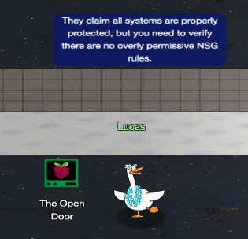

The Open Door

The Neighborhood's Azure tenant claims to be secure, but a critical misconfiguration has left a dangerous entry point wide open.
Challenge Overview
We start by connecting to a restricted Azure CLI session to audit the IT infrastructure for the Neighborhood HOA. The objective is to verify their claims of security by enumerating Network Security Groups and identifying any rules that expose sensitive production ports to the public internet.
1. Initial Reconnaissance
🎄 Welcome to The Open Door Challenge! 🎄
You're connected to a read-only Azure CLI session in "The Neighborhood" tenant.
Your mission: Review their network configurations and find what doesn't belong.
Connecting you now... ❄️
Welcome back! Let's start by exploring output formats.
First, let's see resource groups in JSON format (the default):
$ az group list
JSON format shows detailed structured data.
The challenge begins in a terminal session authenticated to "The Neighborhood" tenant. My first step was to identify the scope of the environment by listing the resource groups. By default, Azure outputs JSON, which provides great detail but can be hard to read quickly.
neighbor@6bde1b14fccf:~$ az group list
[
{
"id": "/subscriptions/2b0942f3-9bca-484b-a508-abdae2db5e64/resourceGroups/theneighborhood-rg1",
"location": "eastus",
"managedBy": null,
"name": "theneighborhood-rg1",
"properties": {
"provisioningState": "Succeeded"
},
"tags": {}
},
{
"id": "/subscriptions/2b0942f3-9bca-484b-a508-abdae2db5e64/resourceGroups/theneighborhood-rg2",
"location": "westus",
"managedBy": null,
"name": "theneighborhood-rg2",
"properties": {
"provisioningState": "Succeeded"
},
"tags": {}
}
]
2. Improving Readability
Great! Now let's see the same data in table format for better readability 👀
answer: $ az group list -o table
Notice how -o table changes the output format completely!
Both commands show the same data, just formatted differently.
To make this data easier to scan, I toggled the output to a table format. This confirmed we have two primary resource groups: theneighborhood-rg1 (East US) and theneighborhood-rg2 (West US).
neighbor@6bde1b14fccf:~$ az group list -o table
Name Location ProvisioningState
------------------- ---------- -------------------
theneighborhood-rg1 eastus Succeeded
theneighborhood-rg2 westus Succeeded
3. Enumerating Network Security Groups (NSGs)
Lets take a look at Network Security Groups (NSGs).
To do this try: az network nsg list -o table
This lists all NSGs across resource groups.
For more information:
https://learn.microsoft.com/en-us/cli/azure/network/nsg?view=azure-cli-latest
With the resource groups identified, I needed to locate the Network Security Groups to understand how traffic is being filtered. I listed all NSGs across the subscription to get a high-level view of the attack surface. The table revealed several NSGs:
- nsg-web-eastus
- nsg-db-eastus
- nsg-dev-eastus
- nsg-mgmt-eastus
- nsg-production-eastus
neighbor@6bde1b14fccf:~$ az network nsg list -o table
Location Name ResourceGroup
---------- --------------------- -------------------
eastus nsg-web-eastus theneighborhood-rg1
eastus nsg-db-eastus theneighborhood-rg1
eastus nsg-dev-eastus theneighborhood-rg2
eastus nsg-mgmt-eastus theneighborhood-rg2
eastus nsg-production-eastus theneighborhood-rg1
4. Inspecting Rules for Anomalies
Inspect the Network Security Group (web) 🕵️
Here is the NSG and its resource group:--name nsg-web-eastus --resource-group theneighborhood-rg1
Hint: We want to show the NSG details. Use | less to page through the output.
Documentation: https://learn.microsoft.com/en-us/cli/azure/network/nsg?view=azure-cli-latest#az-network-nsg-show
I drilled down into nsg-web-eastus. The rules here appeared standard for a web server,
allowing HTTP (80) and HTTPS (443) from the internet with other custom web rules. It ends with a
default deny all rule, which is typical.
neighbor@6bde1b14fccf:~$ az network nsg show --name nsg-web-eastus --resource-group theneighborhood-rg1 | less
{
...
"name": "nsg-web-eastus",
"properties": {
"securityRules": [
{
"name": "Allow-HTTP-Inbound",
"properties": {
"access": "Allow",
"destinationPortRange": "80",
"direction": "Inbound",
"priority": 100,
"protocol": "Tcp",
"sourceAddressPrefix": "0.0.0.0/0"
}
},
{
"name": "Allow-HTTPS-Inbound",
"properties": {
"access": "Allow",
"destinationPortRange": "443",
"direction": "Inbound",
"priority": 110,
"protocol": "Tcp",
"sourceAddressPrefix": "0.0.0.0/0"
}
},
{
"name": "Allow-AppGateway-HealthProbes",
"properties": {
"access": "Allow",
"destinationPortRange": "80,443",
"direction": "Inbound",
"priority": 130,
"protocol": "Tcp",
"sourceAddressPrefix": "AzureLoadBalancer"
}
},
{
"name": "Allow-Web-To-App",
"properties": {
"access": "Allow",
"destinationPortRange": "8080,8443",
"direction": "Inbound",
"priority": 200,
"protocol": "Tcp",
"sourceAddressPrefix": "VirtualNetwork"
}
},
{
"name": "Deny-All-Inbound",
"properties": {
"access": "Deny",
"destinationPortRange": "*",
"direction": "Inbound",
"priority": 4096,
"protocol": "*",
"sourceAddressPrefix": "*"
}
}
]
},
"resourceGroup": "theneighborhood-rg1",
"tags": {
"env": "web"
}
}
5. Checking Another Group
Inspect the Network Security Group (mgmt) 🕵️
Here is the NSG and its resource group:--nsg-name nsg-mgmt-eastus --resource-group theneighborhood-rg2
Hint: We want to list the NSG rules
Documentation: https://learn.microsoft.com/en-us/cli/azure/network/nsg/rule?view=azure-cli-latest#az-network-nsg-rule-list
This NSG did not have anything noteworthy.
neighbor@6bde1b14fccf:~$ az network nsg show --name nsg-mgmt-eastus --resource-group theneighborhood-rg2 | less
(nothing of note)
6. Identifying the Misconfiguration
Take a look at the rest of the NSG rules and examine their properties.
After enumerating the NSG rules, enter the command string to view the suspect rule and inspect its properties.
Hint: Review fields such as direction, access, protocol, source, destination and port settings.
Documentation: https://learn.microsoft.com/en-us/cli/azure/network/nsg/rule?view=azure-cli-latest#az-network-nsg-rule-show
The name nsg-production-eastus stood out as a high-value target. Production
environments often
suffer from "temporary" access rules that are never removed. I enumerated the rules for this
specific group and found a critical violation.
To confirm the finding and complete the challenge, I isolated the specific suspect rule using the
az network nsg rule show command.
Background Info: What is Remote Desktop Protocol (RDP)?
Remote Desktop Protocol (RDP) is a proprietary protocol developed by Microsoft that provides a user with a graphical interface to connect to another computer over a network connection. RDP allows users to access and control a remote computer as if they were sitting in front of it, making it a popular choice for remote administration and support.
RDP operates on TCP port 3389 by default and is commonly used for remote desktop access to Windows machines. However, exposing RDP to the internet without proper security measures can lead to unauthorized access and potential security breaches, as attackers often target RDP services for brute-force attacks or exploitation of vulnerabilities.
neighbor@6bde1b14fccf:~$ az network nsg rule list --nsg-name nsg-production-eastus --resource-group theneighborhood-rg1 | less ... { "name": "Allow-RDP-From-Internet", "nsg": "nsg-production-eastus", "properties": { "access": "Allow", "destinationPortRange": "3389", "direction": "Inbound", "priority": 120, "protocol": "Tcp", "sourceAddressPrefix": "0.0.0.0/0" } }, ... neighbor@6bde1b14fccf:~$ az network nsg rule show -g theneighborhood-rg1 --nsg-name nsg-production-eastus -n "Allow-RDP-From-Internet" { "name": "Allow-RDP-From-Internet", "properties": { "access": "Allow", "destinationPortRange": "3389", "direction": "Inbound", "priority": 120, "protocol": "Tcp", "sourceAddressPrefix": "0.0.0.0/0" } }
Challenge Reference Material
Challenge Descriptions
Classic Mode Description
Help Goose Lucas in the hotel parking lot find the dangerously misconfigured Network Security Group rule that's allowing unrestricted internet access to sensitive ports like RDP or SSH.
CTF Mode Description
Please make sure the towns Azure network is secured properly. The Neighborhood HOA uses Azure for their IT infrastructure. Audit their network security configuration to ensure production systems aren't exposed to internet attacks. They claim all systems are properly protected, but you need to verify there are no overly permissive NSG rules.
Official Hints
- This terminal has built-in hints!